Thank you for attending our wedding - and welcome back to our website!
Looking back on the event, we wanted to share some highlights as well as a few hidden moments.
Before guests arrived, we did our first dance on the brick path outside. The music was Waltz #2 by Dimitri Shostakovich .
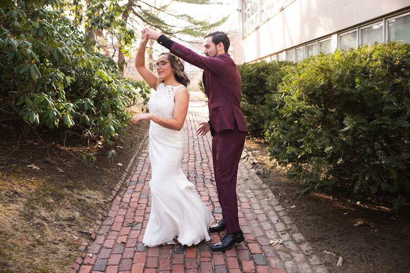
Midway through, the music inspired us to start miming instead of just waltzing. Lily’s gestures grew so dramatic that she knocked her headband off! It got stuck in her hair, but luckily Dan was able to extract it just in time for us to catch the end of the music.
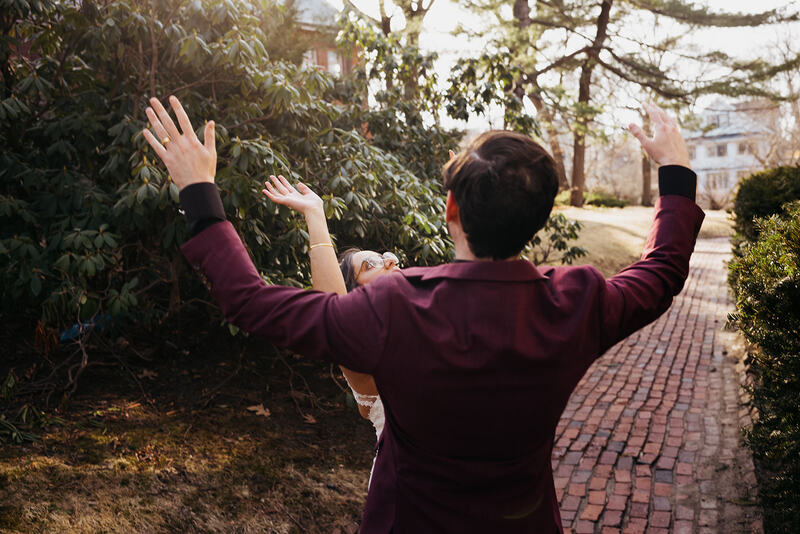
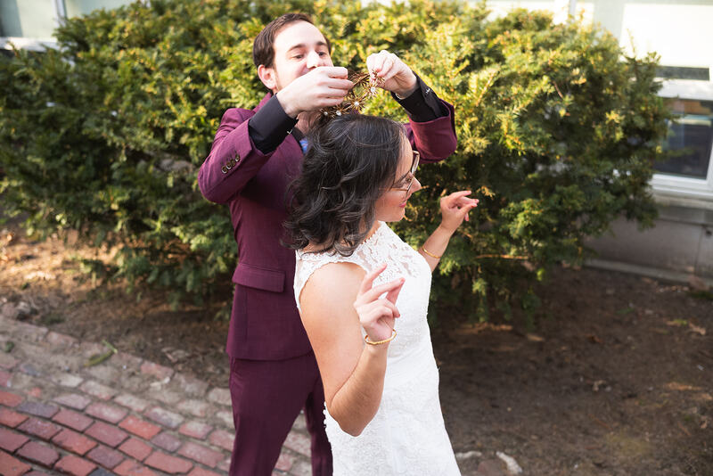
Invigorated by dancing, we moved on to the portrait session with the wedding party. The highlight was when Lily and Tracy engaged in their favorite team activity: making fun of Dan.
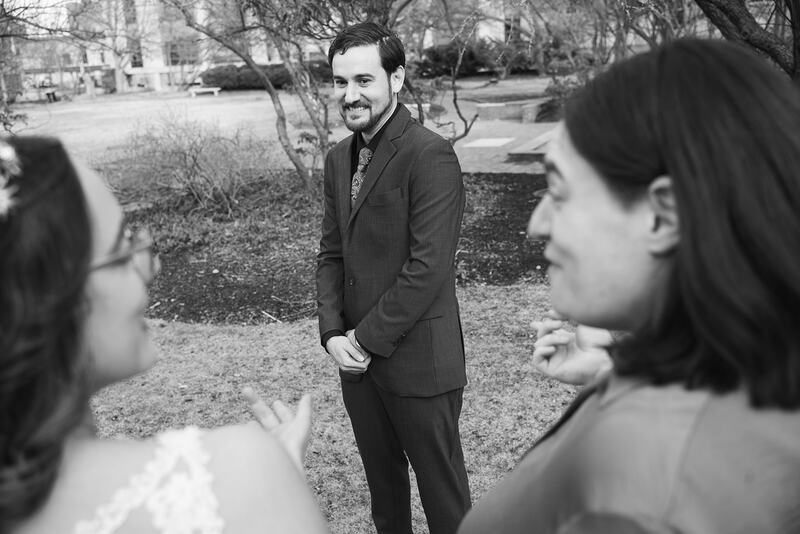
We then dashed off to welcome the rest of the guests at cocktail hour.
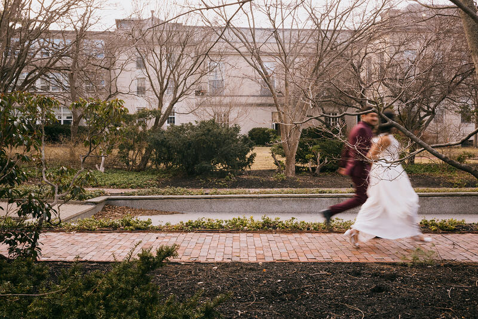
Many of you sent in limericks when you RSVP’d so we decided to put your creativity on display! Our friend Sarah helped us prepare these decorations by transcribing each limerick onto a notecard.
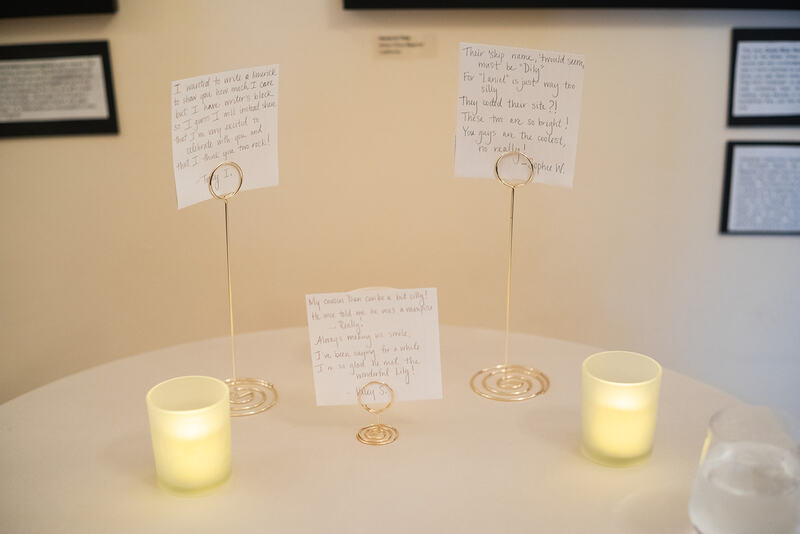
After cocktail hour, it was time to get ready for the main event: Storytime. Here are Lily, Dan, Andrew, and Alfred backstage, moments before they made their appearance. Lily and Dan were a bit nervous, but they knew it was all going to be okay because their friends had their back!
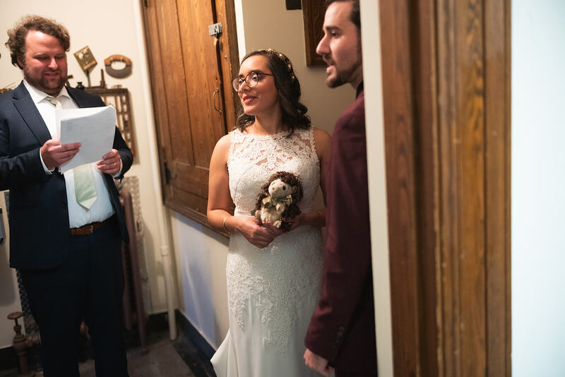
After months of thinking, reading, planning, and disassembling/reassembling wedding traditions, the big moment was finally here.
Since we had already gotten married legally, as we planned this event we decided to skip having an officiant. We were excited by the opportunity of crafting and leading our own ceremony - but quickly discovered that it is a lot of work to craft and lead your own ceremony! How do you enter the space? Who speaks first? What do you even speak about? It was up to us to answer these questions and many others. It took some effort but was worthwhile: we were happy to be able to express ourselves and to weave together many threads and details from our lives into this moment.
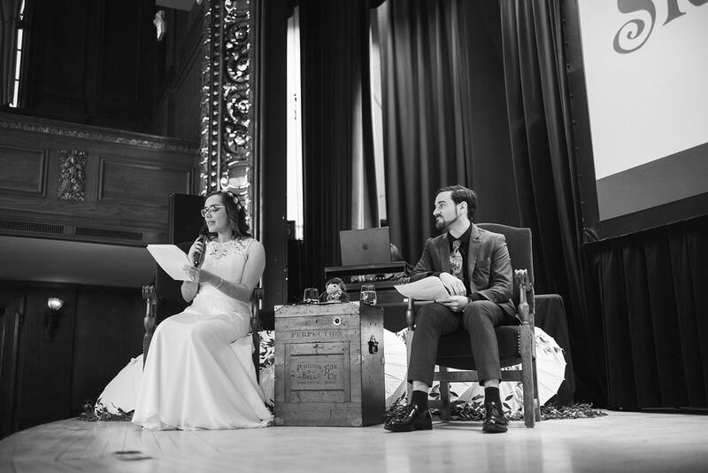
We are especially grateful to our friends Changchang, Duminda, Andrew, Kenneth, and Tracy, as well as our DJ Kara, for helping to make Storytime a reality.
Music was key as we planned this and other aspects of the event. As guests entered the auditorium, three pieces of music were played. 1) Flos Campi by Ralph Vaughan Williams, one of Lily’s favorite pieces of all time, 2) Wild Child by Enya, a song that we listened to in the car the weekend that we got engaged, and 3) The Great Observatory by Nigel Westlake, from an astronomy documentary that Lily fondly remembers seeing with her dad when she was about 10.
We entered the stage to the tune of Two of Us by the Beatles, and exited to Let’s Go Fly a Kite from the Mary Poppins soundtrack.
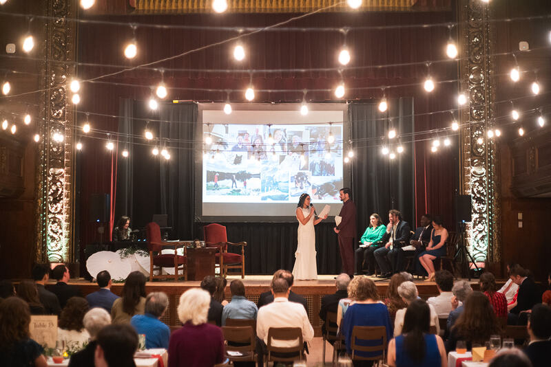
With the hard work behind us, it was time to party!
Dan has a notorious aversion to tomatoes but he would like everyone to know that he ate one at dinner.
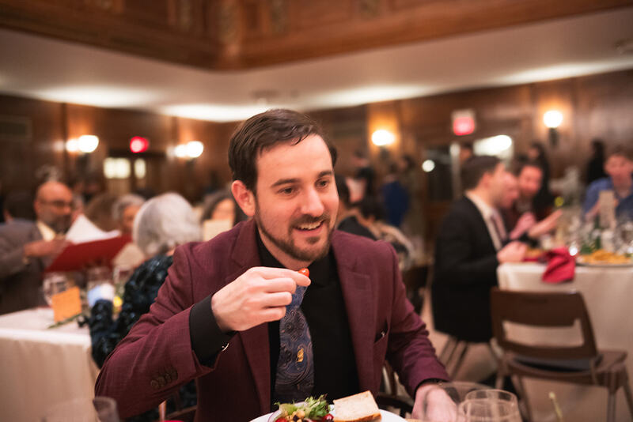
Dan post-tomato.
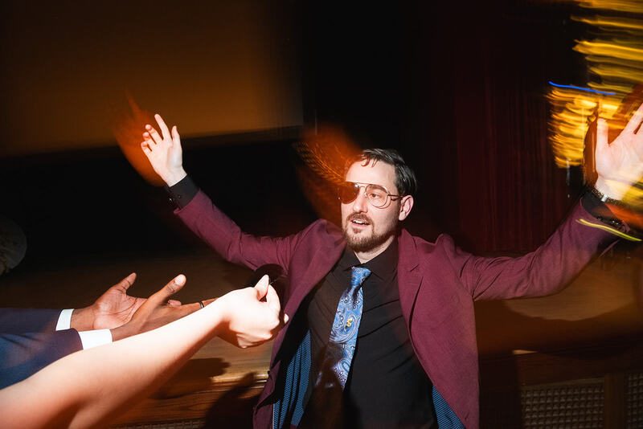
Those of you who reached the end of the Choose Your Own Adventure book might remember the Lore-o-Scope, which revealed how each item in the inventory connected to events in our lives. We originally intended for the Lore-o-Scope to be a physical object that you could remove from the book. While we didn’t get the chance to create it in that way, and instead left it to the reader’s imagination, Lily had fun sketching the concept.
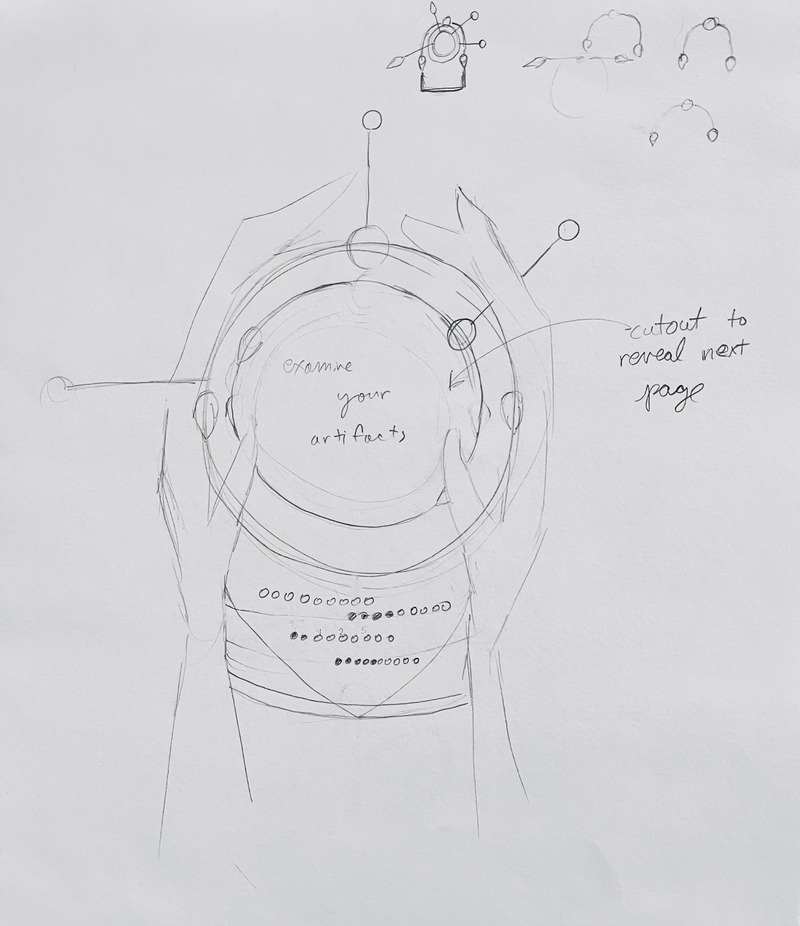
The Fortune Cards that guests received were created by both of us: art by Lily and text by Dan. Dan long felt that Lily's art would work well as fortune cards, with its focus on characters and dreamlike settings. Finally we decided to try the idea out as a gift for our wedding guests. We enjoyed making them and we hope you liked receiving them. The motif at the bottom - a circle connected to two teardrops on either side - is based on the shape of stones on Lily’s engagement ring.
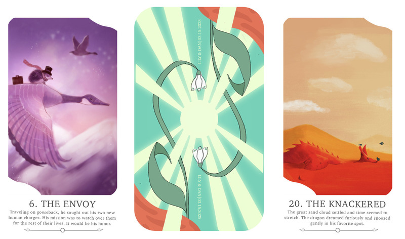
The back of the cards feature the snowdrop, one of the earliest flowers of the year. It blooms for a brief period in early to mid March - right at the time we had our wedding. (We incorporated snowdrops into several design elements of the celebration, including a location in the Choose Your Own Adventure story.) Although snowdrops are small and delicate, they manage to bloom at a chilly time of year when flowers can often seem unimaginable. They remind us that beauty and magic can be found if you look closely at the world around you - and they reassure us that brighter, warmer days are on the horizon.